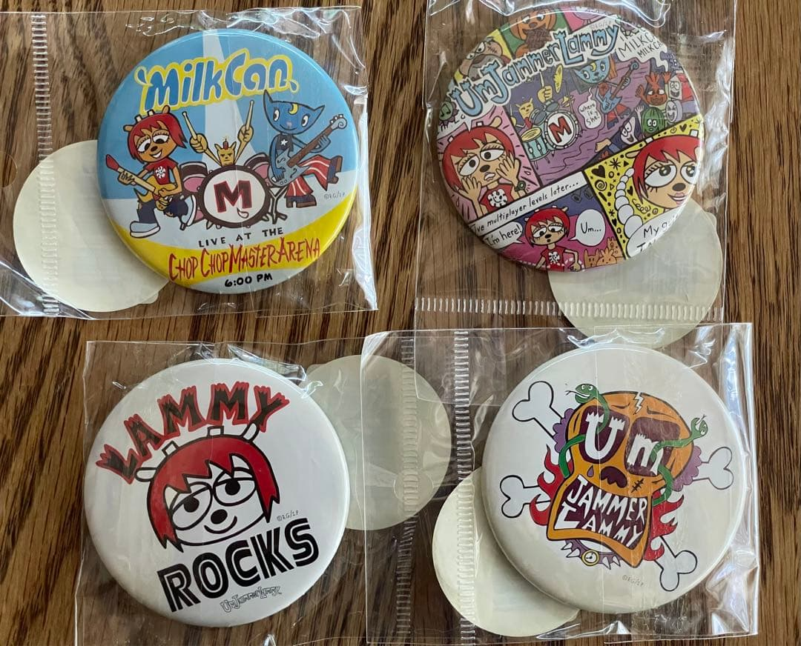
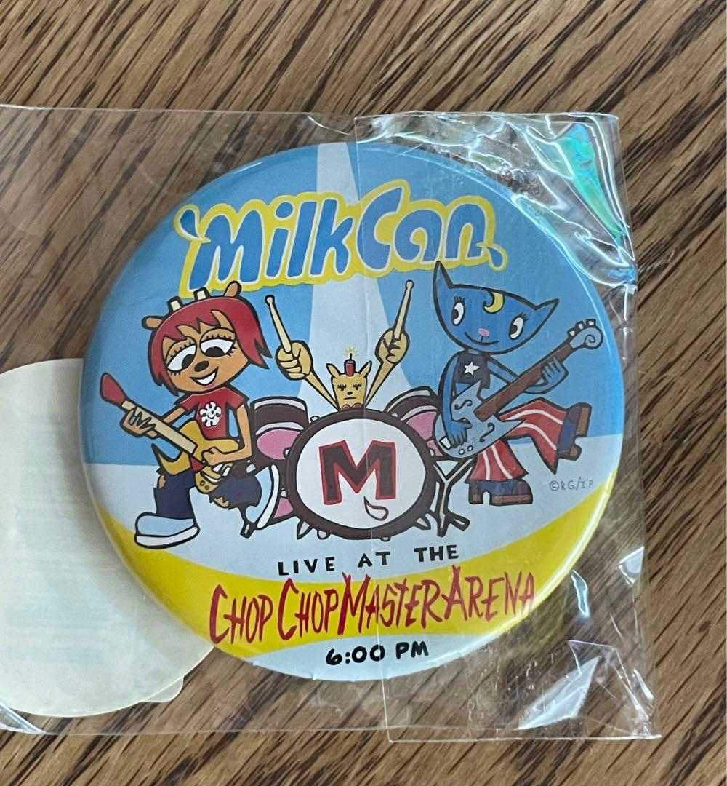
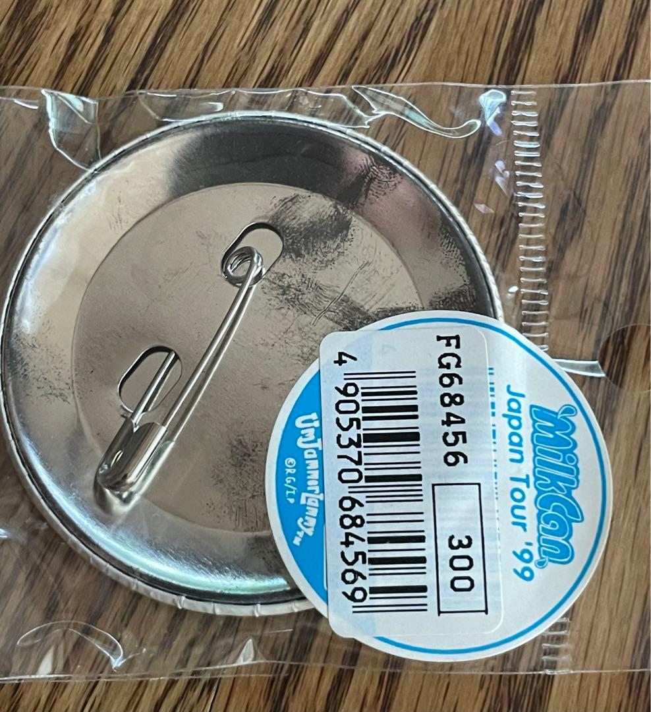
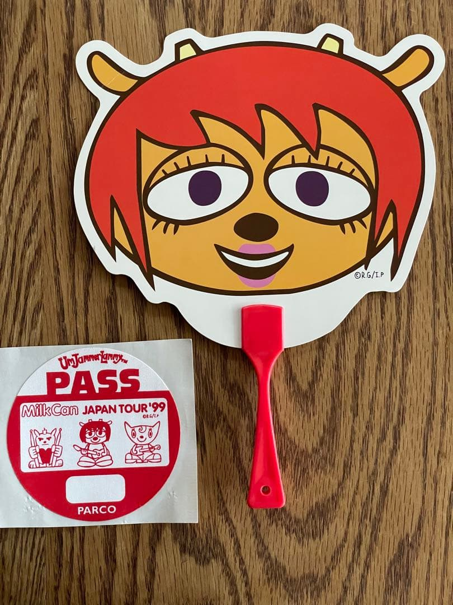
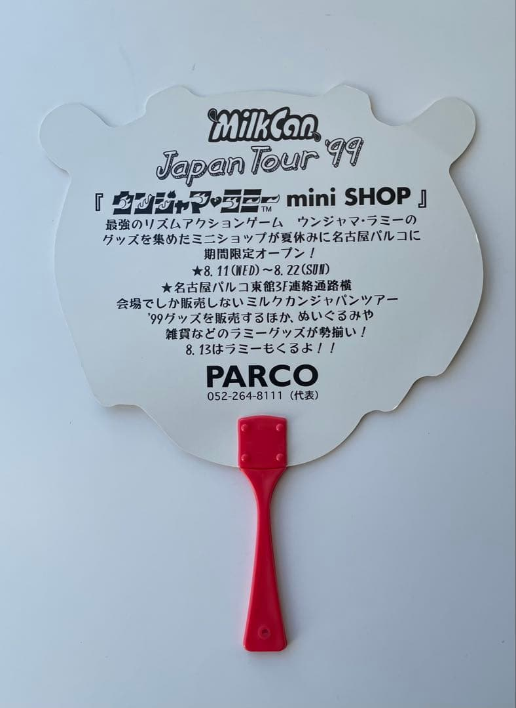
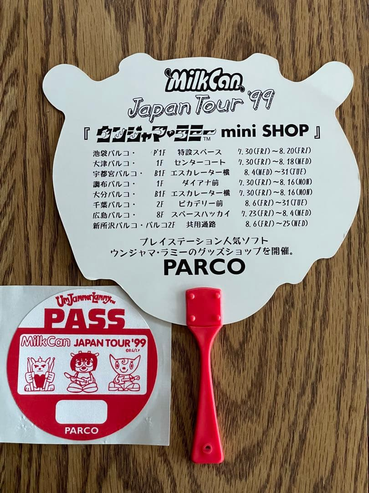

★ MILKCAN TOUR '99 ★★ ミルクカンツアー '99 ★
In 1999, Sony Computer Entertainment and PARCO staged the MilkCan Japan Tour '99 — an in-store promotional event built around the launch of Um Jammer Lammy. Pop-up "mini SHOPs" toured PARCO department stores in Tokyo (Ikebukuro), Sendai, and Nagoya throughout November and December 1999, selling MilkCan-branded merchandise, exclusive promo goods, and event-only items. The campaign ran under the framing of a fictional MilkCan concert tour — even billing the in-store dates as "Live at the Chop Chop Master Arena, 6:00 PM" — and is the source of some of the rarest UJL collectibles, including a four-design sealed pinback button set, a Lammy-face paper hand fan (uchiwa), and a "PASS" event sticker keyed to the PARCO venue.
1999年、ソニー・コンピュータエンタテインメントとパルコは、ウンジャマ・ラミーの発売プロモーションとしてミルクカン ジャパンツアー'99を実施しました。1999年11月から12月にかけて、池袋・仙台・名古屋のパルコ各店にポップアップ形式の「mini SHOP」が巡回出店し、ミルクカンブランドのグッズや限定プロモアイテム、イベント限定商品を販売しました。キャンペーンは架空のミルクカン全国ツアーという体裁で展開され、店舗開催も「Live at the Chop Chop Master Arena 6:00 PM（チョップチョップ・マスター・アリーナ ライブ 午後6:00）」として告知。UJLグッズの中でも特に希少とされる、未開封4種セットの缶バッジ、ラミー顔のうちわ、そしてパルコ会場と紐づいた「PASS」ステッカーなどはすべてこのキャンペーンに由来します。
— TOUR PINBACK BUTTON SET (FG68456) —— ツアー缶バッジセット（FG68456）—

Full Tour Button Set — all four sealed MilkCan Japan Tour '99 pinback buttons photographed together. Top-left: "MilkCan — Live at the Chop Chop Master Arena, 6:00 PM" with the band on stage. Top-right: the Um Jammer Lammy comic-panel collage button. Bottom-left: the white "Lammy ROCKS" portrait button. Bottom-right: the orange skull-and-crossbones "Um Jammer Lammy" emblem button. The set was sold loose and individually at the PARCO mini SHOPs, but rarely surfaces today as a complete sealed group.ツアー缶バッジ4種セット — 未開封のミルクカン ジャパンツアー'99缶バッジ4種を1枚に並べた状態。左上：バンドのステージ姿を描いた「MilkCan — Live at the Chop Chop Master Arena 6:00 PM」、右上：『ウンジャマ・ラミー』コミックページ風コラージュ缶バッジ、左下：白地に赤毛のラミーをあしらった「Lammy ROCKS」ポートレート缶バッジ、右下：オレンジ色のドクロ＆骨「Um Jammer Lammy」エンブレム缶バッジ。パルコ mini SHOPでは個別販売されていたが、現存する完全未開封の4種揃いは非常に少ない。

"MilkCan — Chop Chop Master Arena" Button (Front) — sealed close-up of the lead pinback button: Lammy on guitar, Ma-san behind the red-M bass drum, and Katy Kat on bass against a sky-blue gradient, with "MilkCan" arched overhead and the gig-poster line "Live at the Chop Chop Master Arena / 6:00 PM" on the yellow lower band. Rodney Greenblat © tag at the right edge.「MilkCan — Chop Chop Master Arena」缶バッジ（表面）— セット看板にあたる缶バッジを未開封状態で接写。空色のグラデーションを背景にギターを構えるラミー、赤い「M」バスドラムを叩くマーさん、ベースを弾くケイティ・キャットが並び、上部にはアーチ状の「MilkCan」ロゴ、下部の黄色帯にはライブポスター調の「Live at the Chop Chop Master Arena / 6:00 PM」が入る。右端にロドニー・グリーンブラットの©表記。

Tour Button (Back) — reverse of the same sealed pinback showing the standard safety-pin clasp and the official MilkCan Japan Tour '99 product sticker: "MilkCan Japan Tour '99 / UnJammerLammy", catalogue number FG68456, ¥300 retail price, with the bar code 4905370684569 — confirming this is part of the Sony Creative Products FG-series UJL line.ツアー缶バッジ（裏面）— 同じ未開封缶バッジの裏面。標準的な安全ピン留め具と、正規の「MilkCan Japan Tour '99 / UnJammerLammy」シールが確認できる。シールには品番FG68456、税込定価300円、バーコード4905370684569が記載され、ソニー・クリエイティブプロダクツのFGシリーズUJLラインに属することがわかる。

"Um Jammer Lammy" Comic-Panel Button — sealed close-up of the comic-collage variant. The face splits into multiple panels: Lammy with hands clasped to her face ("Five multiplayer levels later... I'm here!"), Ma-san at the drums asking "Where is She?", Katy Kat on bass, Cathy Pillar with a Lammy mask, and a Lammy "Um... My guitar is in my mind!" close-up — the iconic Rodney Greenblat splash artwork drawn directly from the UJL key art.「Um Jammer Lammy」コミックページ缶バッジ — コラージュ柄バリアントを未開封状態で接写。フェイス面が複数のコマに分割されており、両手を顔にあてるラミー（「Five multiplayer levels later... I'm here!」）、ドラムのマーさん（「Where is She?」）、ベースのケイティ・キャット、ラミーのマスクを被ったキャシー・ピラー、そして「Um... My guitar is in my mind!」のラミーアップなど、UJLのキーアートから引用したロドニー・グリーンブラットの代表的なスプラッシュ絵を凝縮したデザイン。

"Lammy ROCKS" Button — white-ground sealed pinback featuring a head-and-shoulders portrait of Lammy beneath a hand-drawn red "LAMMY" header and a black "ROCKS" callout. A small "UmJammerLammy" wordmark sits below "ROCKS" with the Rodney Greenblat © stamp. The simplest and most graphic of the four tour buttons.「Lammy ROCKS」缶バッジ — 白地に手描き風の赤い「LAMMY」ヘッダーと黒い「ROCKS」キャッチコピーが配され、その間にラミーのバストアップ・ポートレートが描かれた未開封缶バッジ。「ROCKS」の下には「UmJammerLammy」のロゴと、ロドニー・グリーンブラットの©スタンプが入る。4種の中でもっともシンプルでグラフィカルなデザイン。

"Um Jammer Lammy" Skull Button — sealed close-up of the orange skull-and-crossbones variant. An orange flaming skull labelled "Um — JAMMER — LAMMY" is wrapped in green snakes, framed by crossed bones on a cream background, with a small clock at the lower jaw — a nod to UJL's "6:00 PM" tour conceit. Rodney Greenblat © at the lower right.「Um Jammer Lammy」ドクロ缶バッジ — オレンジ色のドクロ＆骨バリアントを未開封状態で接写。クリーム色の地に、緑のヘビが巻きついた「Um — JAMMER — LAMMY」の文字入りオレンジ色の燃えるドクロが配置され、左右に骨がクロスする。下顎には小さな時計が描かれ、UJLツアーの「6:00 PM」コンセプトを示唆する。右下にロドニー・グリーンブラットの©マーク。
— LAMMY HAND FAN (UCHIWA) —— ラミー うちわ —

Lammy Uchiwa (Front) — die-cut paper hand fan in the shape of Lammy's head with the standard red plastic uchiwa handle. The face print uses the Rodney Greenblat key-art portrait — full-on red hair, droopy eyes, and a wide smile — and was handed out to visitors at the PARCO mini SHOP venues as a freebie / promotional giveaway.ラミー うちわ（表面）— ラミーの顔型に型抜きされた紙製うちわ。柄は標準的な赤いプラスチック製の柄を使用。フェイス面はロドニー・グリーンブラットのキーアート版ポートレート（前面アングル、垂れ目、満面の笑み）で、パルコ mini SHOP 各会場で来場者に無料配布された販促ノベルティ。

Lammy Uchiwa (Back) — the reverse of the fan reprints the campaign banner: "MilkCan Japan Tour '99 — UmJammerLammy mini SHOP" with the PARCO logo at bottom and the schedule listing the Ikebukuro PARCO P'PARCO 2F venue, opening dates of November 13 (Sat) – November 27 (Sat) 1999, and a quick description of the goods on offer. This back side is the only place the tour's exact venue data is printed.ラミー うちわ（裏面）— うちわの裏面にはキャンペーン告知が再録される。「MilkCan Japan Tour '99 — ウンジャマラミー mini SHOP」のヘッダー下にパルコのロゴ、池袋パルコ P'PARCO 2F の会場情報、1999年11月13日（土）〜11月27日（土）の開催日程、そして取り扱いグッズの簡単な説明が印刷されている。ツアーの正確な会場データが記載されているのは、この裏面のみ。
— EVENT "PASS" STICKERS —— イベント「PASS」ステッカー —
— PROMOTIONAL FAN & TOUR PASS —— 販促うちわ＆ツアーパス —

A die-cut Lammy-face paper fan (uchiwa) with a red handle, shown alongside the matching "MilkCan Japan Tour '99" PARCO pass card.赤い柄の付いた、ラミーの顔型ダイカットうちわ。お揃いの「MilkCan Japan Tour '99」PARCO パスカードと一緒に撮影されている。

The fan's printed front — Lammy's big-eyed face die-cut into the paddle shape, with the red plastic handle.うちわのプリント面。大きな目のラミーの顔がうちわの形にダイカットされ、赤いプラスチックの柄が付く。

The reverse of the fan, advertising the "MilkCan Japan Tour '99 — Um Jammer Lammy mini SHOP" with the full list of PARCO store dates and locations.うちわの裏面。「MilkCan Japan Tour '99 — ウンジャマ・ラミー mini SHOP」の告知で、各PARCO店舗の開催日と場所が一覧で記されている。

The fan's tour-schedule back laid out with the PARCO pass card — the pass printed with three MilkCan characters and a blank name field.うちわのツアー日程面と、PARCOパスカードを並べた一枚。パスにはMilkCanの3キャラクターと、空欄の名前記入欄がプリントされている。

A close-up of the "MilkCan JAPAN TOUR '99" PARCO pass, with line-art of Katy, Lammy, and Ma-san above a blank fill-in panel.「MilkCan JAPAN TOUR '99」PARCOパスのクローズアップ。ケイティ、ラミー、マーさんの線画の下に、空欄の記入パネルが配されている。